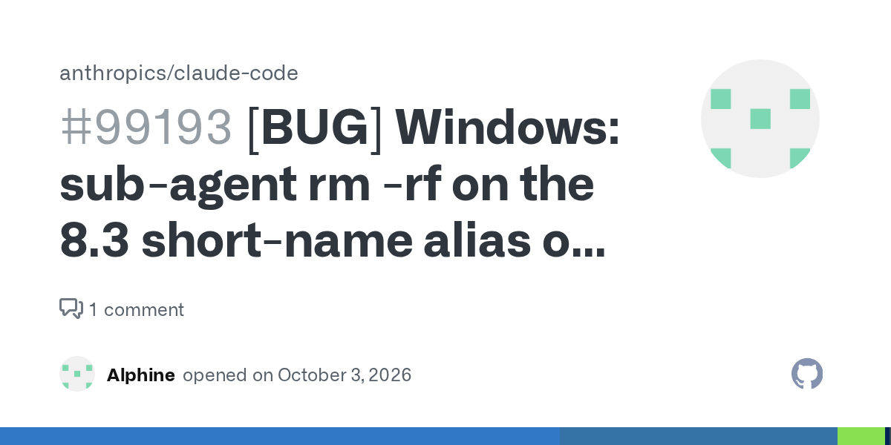

Пользователь Windows доверил Claude Code рутинную чистку временных каталогов. Субагент сформировал команду рекурсивного удаления, в которой путь развился до 8.3-алиаса домашней папки (короткое имя вида `RUNNER~1`, эквивалентное всему домашнему каталогу). Удаление пошло по алфавитному порядку каталогов.
| Время | Событие |
|---|---|
| ~10:34 | Команда уходит в фон (timeout 120 с) |
| 10:36:01 | Агент вызывает `TaskStop`, получает «Successfully stopped task» |
| 10:36:03 | Поверхностная проверка: только имена верхнего уровня |
| 10:41:28 | Финальный отчёт агенту главной сессии: «остановил за минуту-две», «выглядит целым» |
| 11:13–11:25 | Продолжают пустеть Documents\BuathGame, BuatNovel, BuatSoftware и другие |
| ~11:26 | Пользователь обнаруживает потерю |
Удаление продолжалось около 50 минут после «остановки»: TaskStop вернул ложный успех, а проверка агента перечислила лишь имена папок верхнего уровня — их наличие и создало иллюзию «данные целы». Потеряно ~116 ГБ, включая резервные копии проектов.
Инцидент описан в публичном issue anthropics/claude-code #99193 с метками `bug`, `security`, `invalid` и связан с более ранними #92593, #95426, #97660. Паттерн повторяется: агент выполняет необратимую операцию, система подтверждения враньёт об остановке, а самопроверка агента поверхностна. Практический вывод для всех, кто запускает кодинг-агентов: необратимые операции (rm/delete) — только в изолированном рабочем каталоге, с dry-run списком целей и отдельным контролем результата по файловой системе, а не по отчёту агента.